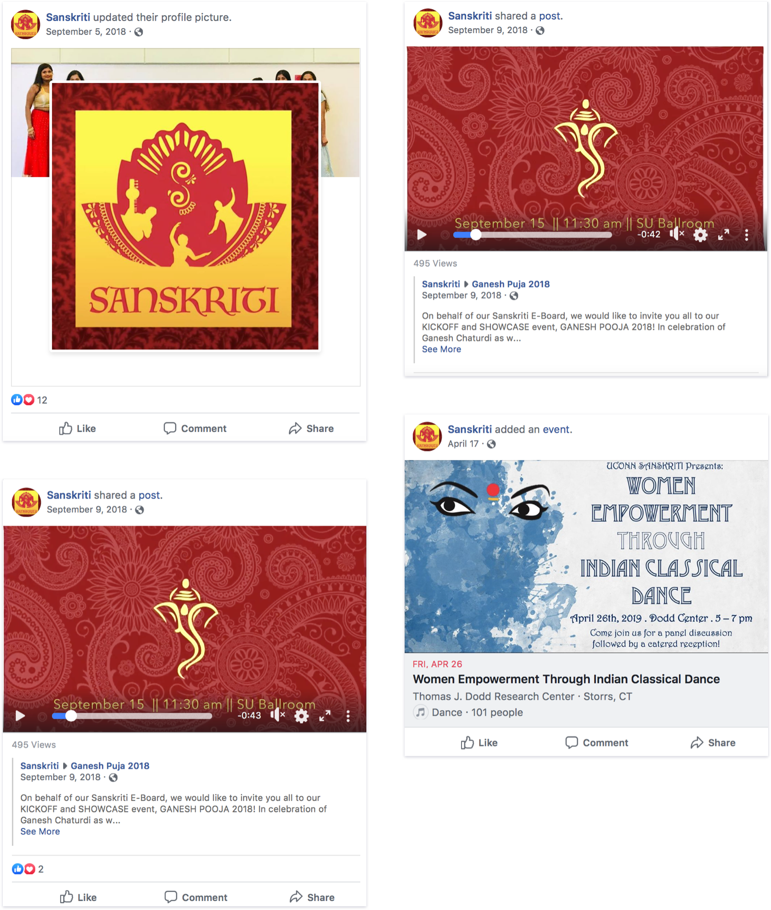

Sanskriti Logo Design
introduction
Sanskriti brings traditional Indian culture to UConn through dance, music, and cultural celebrations. I was hired as a freelance graphic deisgner to help the club with its logo.
Goal 1
Represent the traditional Indian culture Sanskriti brings to UConn.
Goal 2
Reflect the perfomance and dance nature of the organization.
Overview
Role: Graphic Designer
Team: Solo
Duration: 4 Weeks
solution
Final Logo

research
Frequent Stakeholder Checkins
Throughout the process, I met with the executive board to discuss art direction. To capture a logo that represented UConn's traditional Indian culture club, it was helpful to meet with its leaders and collaborate on a single solution.
Takeaways
- The main way Sanskriti revives traditional Indian culture is through dance and music. The final logo needed to reflect the passion they put behind each performance.
- The club focuses on two types of Indian dance: Kuchipudi and Bharatnatyam. This helped drive research into the poses and garb utilized in performances.
Visual research

Getting the Form and Shape

Playing with Fonts
Colors
Conclusion
Results

Keywords
Passion
Ornate
Intricate
Artistic
Revival
In Use

Challenges and Lessons
Finding the Right Form
Delve into The Culture
If I Had Unlimited Time
Develop a Larger Brand Document